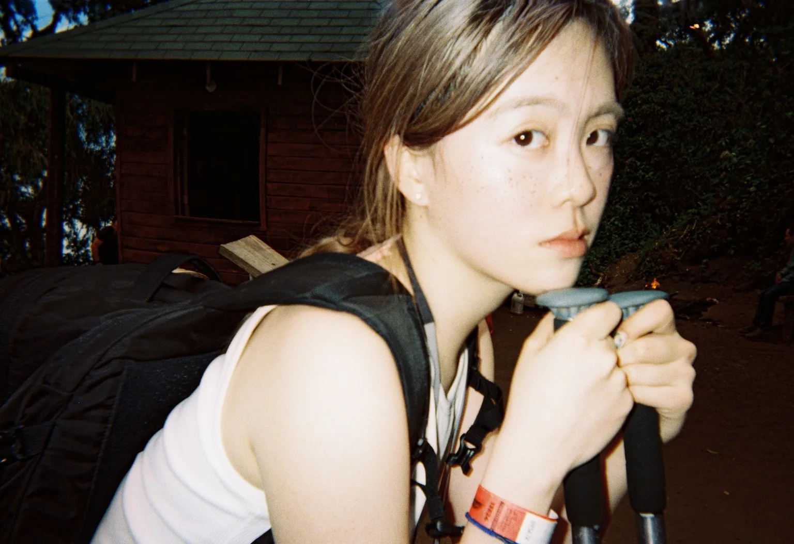
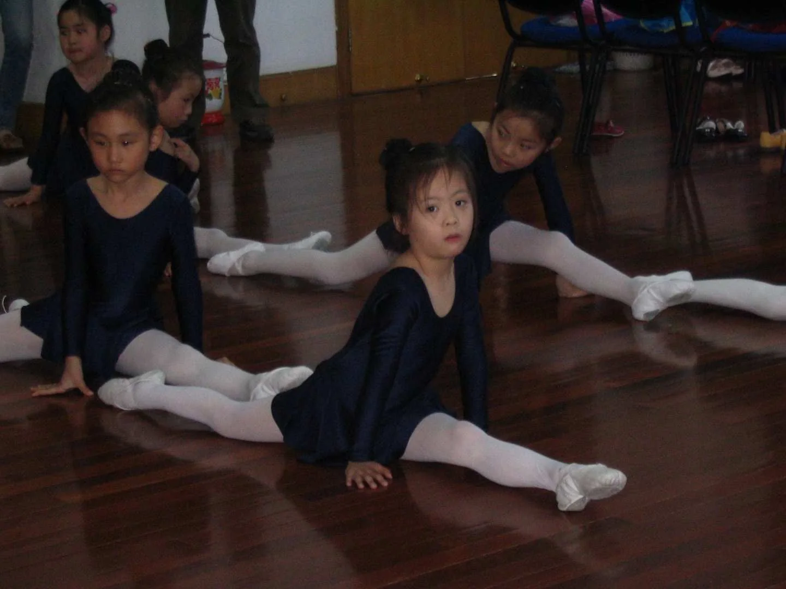
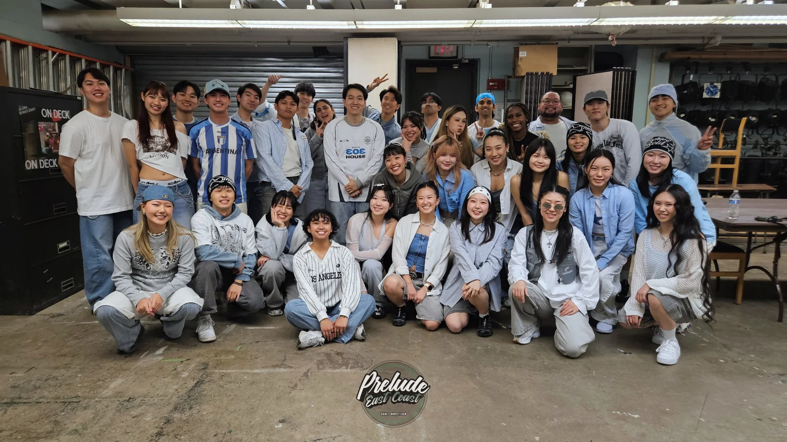
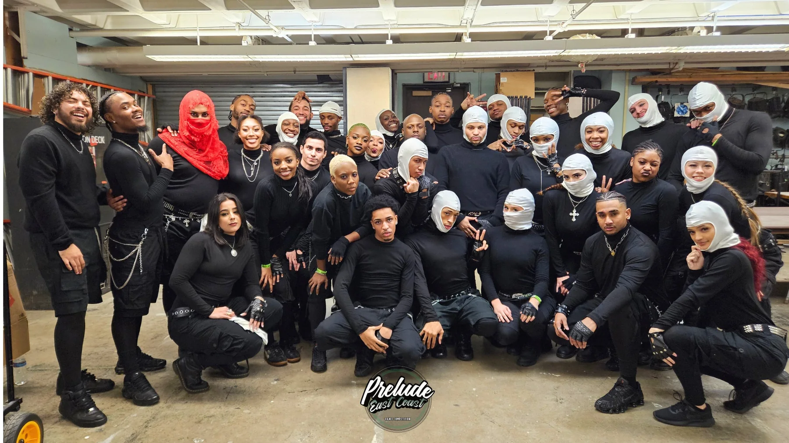
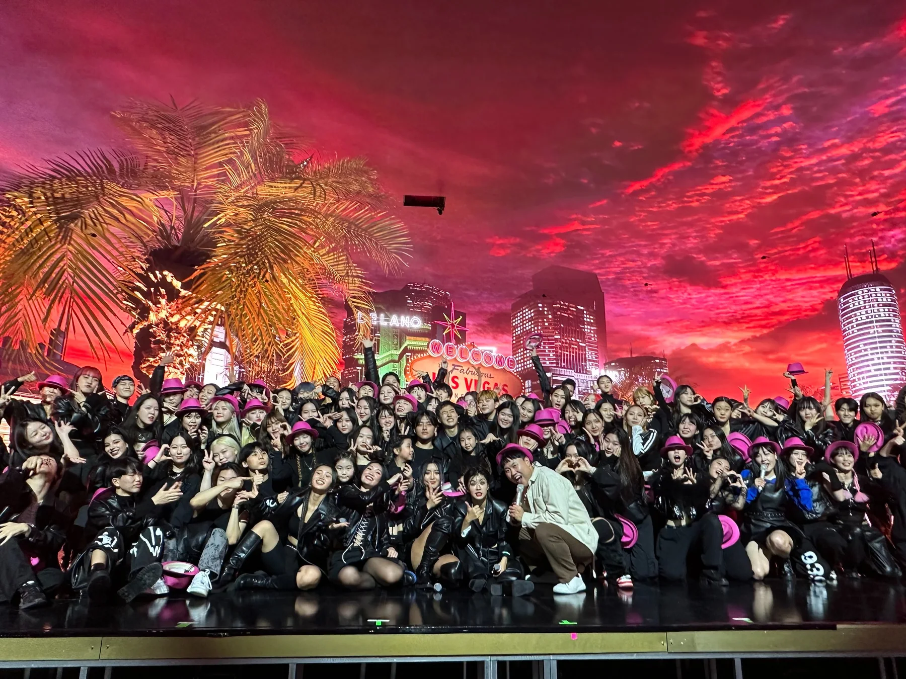

01
Sirui Zhu.
Sirui Zhu.
I go by Rui.
Rui comes from 睿 — a character associated with insight, perception, and foresight.

I’m a storyteller who turns data and business questions into clear decisions.
Professional enough for a recruiter. Personal enough to remember.
Rui comes from 睿 — a character associated with insight, perception, and foresight.
BA in Economics and Statistics at Barnard. MS in Business Analytics at Columbia. Exchange at Yonsei.
Financial, operating, and business questions are where I feel most at home.
Two very different ways I stay creative, collaborative, and curious.
Hover a place on the map to see the chapter, the image, and the lesson it left behind.

I was born in Shanghai in 2001. My childhood there gave me structure early: discipline, curiosity, and the first sense that practice matters — especially through dance.
Investing · Quantitative research · Private equity · Strategy · Entrepreneurship
Built a quantitative equity-screening model combining financial statements, dividend history, market performance, and macroeconomic indicators to identify companies exhibiting elevated dividend-cut risk.
Developed a full investment thesis combining industry structure, competitive strategy, accounting analysis, five-year forecasting, and intrinsic valuation.
Evaluated HCI Group through a private-equity lens, building operating projections, leverage and debt schedules, exit scenarios, and downside sensitivities to assess equity return potential.
Built an end-to-end LBO case evaluating transaction structure, operating performance, debt capacity, and sponsor returns, paired with an investment memo translating model outputs into a recommendation.
Co-founded a financial-literacy venture, developing the business model, customer segmentation, pricing strategy, institutional go-to-market plan, and pilot design.
Short version first. Details on hover or tap.
Analyzed performance and risk across a $160M multi-asset platform, built structured-note surveillance, and translated market data into portfolio recommendations.
Co-led proprietary sourcing and underwrote upstream energy assets across Latin America, combining asset economics, diligence, and investor-facing synthesis.
Screened opportunities, built integrated operating and returns models, underwrote structured credit, and translated diligence into investor materials.
Developed a Python-based dividend-cut risk screening model across Russell 3000 equities and turned the work into an interactive Streamlit platform.
MS Business Analytics
Columbia Engineering × Columbia Business School
BA Economics–Statistics
Minor in Asian Studies
Business Administration Program
Exchange Student
From childhood training to New York stages and JTBC in Seoul, movement has shaped how I think about discipline, collaboration, and presence.
Dance was one of my first experiences with repetition, discipline, and learning through movement.

Elements XXIV · performance team · watch ↗

3rd place · performance team · watch ↗

Selected as one of 50 dancers from roughly 1,000 applicants for JTBC’s dance program, culminating in a Las Vegas performance experience.
Open to opportunities across investing, strategy, analytics, and consulting.